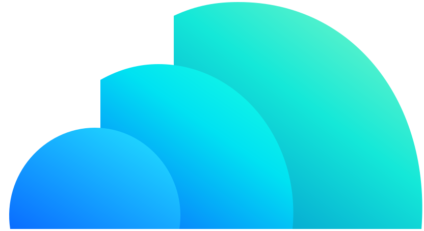

{{ tx.loginBody }}
{{ banner }}
{{ tx.noAccount }}
{{ tx.signupBody }}
{{ banner }}
{{ tx.haveAccount }}
{{ tx.forgotBody }}
{{ banner }}
{{ tx.resetBodyA }}{{ resetEmail }}{{ tx.resetBodyB }}
{{ tx.noEmail }}

{{ tx.obWelcomeBody }}
{{ tx.obProfileBody }}
{{ tx.obReadyBody }}
{{ greeting.body }}
{{ grow.keyTitle }}
{{ grow.keyBody }}
{{ grow.keyTitle }}
{{ grow.keyBody }}
{{ tx.buildNextSub }}
{{ tx.strengthsSub }}
{{ k.signal }}
{{ tx.oppPlansSub }}
{{ o.record }}
{{ tx.doublesPlaySub }}
{{ d.pattern }}
{{ tx.focusSub }}
{{ fd.goal }}
{{ tx.voiceHint }}
{{ rv.hint }}
{{ detail.unordered }}
{{ n.text }}
{{ banner }}
{{ banner }}
{{ tx.lineupBody }}
{{ tx.saveErr }}
{{ tx.noPlayersFound }}
{{ rs.badText }}
{{ tx.saveErr }}
{{ tx.deleteMatchBody }}
{{ tx.deleteAccountBody }}
{{ banner }}
{{ tx.consentBody }}
{{ tx.noneHint }}
{{ delFocusBody }}
{{ toast.text }}
{{ toast.sub }}